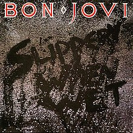
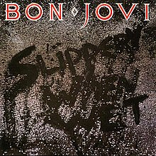

About Us
Welcome to madSounds, your go-to platform for free audio and video streaming of classic albums! Dive into legendary music like Led Zeppelin II, Slippery When Wet, Electric Ladyland, and more. Immerse yourself in the golden age of music, all at your fingertips.
 
